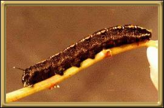
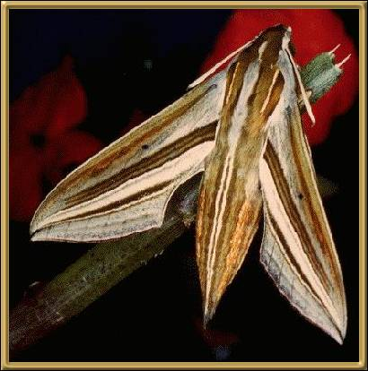

Photographer: Don Herbison-Evans

Photographer: Merlin Crossley Photographs courtesy of: Lepidoptera Larvae of Australia
This is really quite a stunning moth! Specimens have been found in both Sydney and Melbourne.